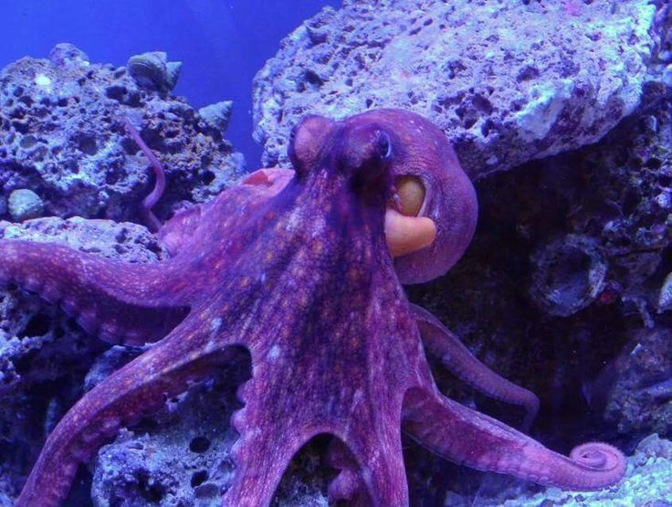
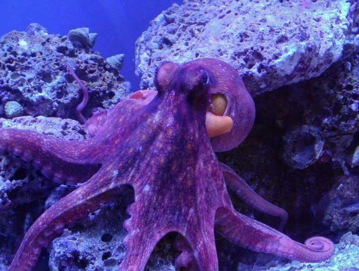
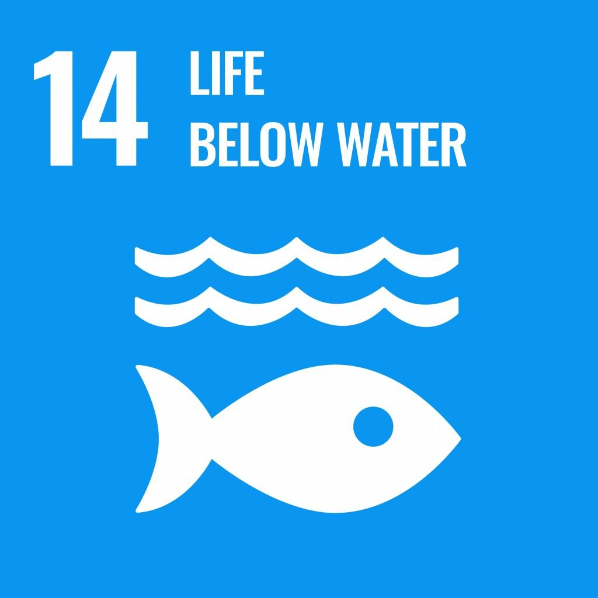

⌞Apa itu SDG 14? (˶ᵔ ᵕ ᵔ˶)⌝

SDG 14, atau Life Below Water, merupakan salah satu dari 17 Tujuan Pembangunan Berkelanjutan (Sustainable Development Goals) yang ditetapkan oleh Perserikatan Bangsa-Bangsa (PBB) sebagai bagian dari Agenda 2030. Tujuan ini berfokus pada perlindungan, konservasi, dan pemanfaatan sumber daya laut dan ekosistem pesisir secara berkelanjutan. Laut dan samudra memegang peranan vital bagi kehidupan di bumi, mulai dari menyediakan oksigen, makanan, dan mata pencaharian, hingga berperan dalam regulasi iklim global.
SDG 14 menekankan pentingnya menjaga kesehatan ekosistem laut dengan mengurangi polusi, terutama dari plastik dan limbah kimia, serta mengelola perikanan agar tidak terjadi penangkapan ikan berlebih yang dapat mengancam keberlanjutan stok ikan. Selain itu, tujuan ini mendorong perlindungan terhadap habitat laut, termasuk terumbu karang, mangrove, dan padang lamun, yang menjadi rumah bagi berbagai spesies laut. SDG 14 juga mengajak negara-negara di dunia untuk bekerja sama dalam penelitian, pemantauan, dan kebijakan pengelolaan laut agar dapat mendukung pembangunan ekonomi biru (blue economy) yang berkelanjutan.
Dengan kata lain, SDG 14 bukan hanya soal melestarikan laut untuk generasi saat ini, tetapi juga memastikan bahwa samudra tetap produktif dan sehat untuk generasi masa depan, sekaligus mendukung ketahanan pangan, mata pencaharian masyarakat pesisir, dan keseimbangan ekosistem global.